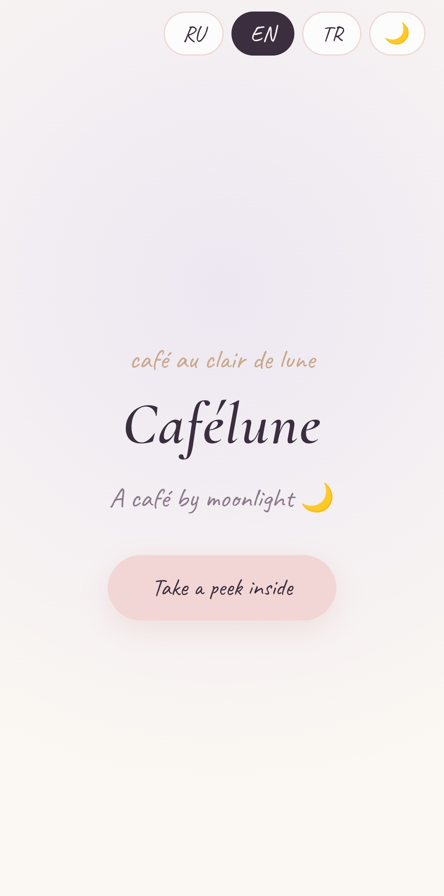
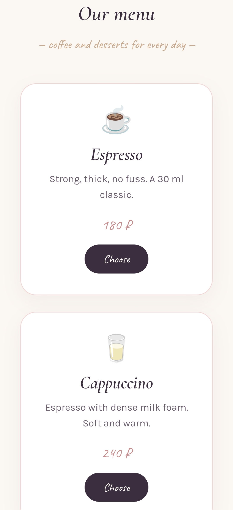
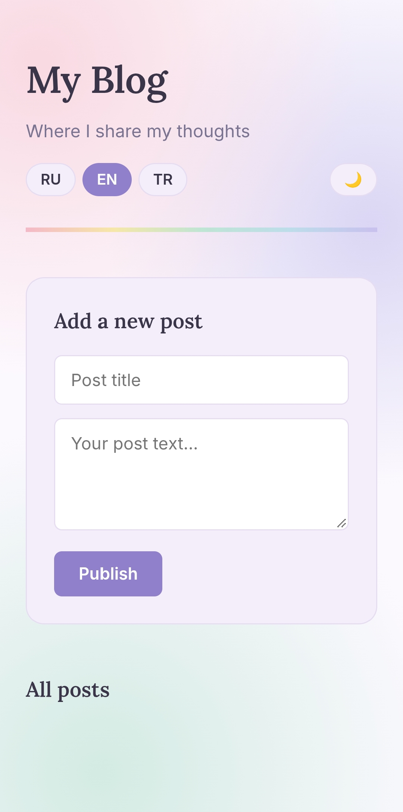
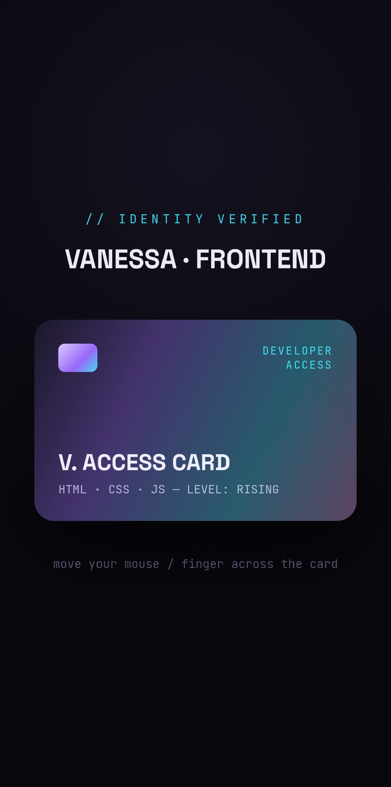

Сделать одностраничный сайт для вымышленного кафе «Cafélune»: показать меню, дать возможность выбрать позиции и оформить быстрый заказ. Сайт должен читаться на трёх языках — русском, английском и турецком.
Я полностью разработала проект самостоятельно: придумала концепцию, написала всю HTML-разметку (карточки меню, шапку с логотипом), оформила страницу в CSS с адаптацией под мобильные телефоны. Также я написала скрипт на JavaScript для переключения языков и кнопок «Выбрать» на карточках.
Для быстрой смены языка я использовала JavaScript и структуру данных с переводами, чтобы не перезагружать страницу. Для меню я сделала карточки с эмодзи и четкими кнопками выбора, чтобы интерфейс был понятен пользователю с телефона.


Получился рабочий мультиязычный лендинг с меню из семи позиций и быстрым выбором блюд. Проект размещён на GitHub Pages и доступен по ссылке.
Создать страницу личного блога, где можно в любой момент добавить новую запись (заголовок + текст) и увидеть её в общем списке. Дополнительно: реализовать переключение тёмной/светлой темы и трёх языков интерфейса.
Я сделала вёрстку формы для ввода новой записи и списка существующих постов на HTML. Оформила дизайн в CSS (стиль «гортензия»), создала кнопку смены темы и языковую панель. На JavaScript я написала логику добавления поста на страницу и валидацию (проверку, что поля не пустые).
Чтобы интерфейс выглядел живым, я добавила плавные переходы цветов в CSS при смене темы. Для валидации формы использовала простые условия в JavaScript, которые не дают опубликовать пустую запись. Языки переключаются с помощью замены текста в DOM-элементах.

Интерфейс подстраивается под выбранную тему и язык, а форма корректно добавляет новые заголовки и текст в список. Проект полностью выполнен на клиентской стороне.
Сделать визитку-портфолио в виде голографической ID-карты разработчика, которая «оживает» при движении мыши или пальца. Задача — создать запоминающийся дизайн, демонстрирующий мои навыки в вёрстке и анимациях.
Я разработала дизайн карты в стиле «доступ подтверждён» (Developer Access, уровень: Rising). Написала HTML-структуру для всех элементов карты и настроила CSS-эффекты для голографического блеска. На JavaScript реализовала логику наклона карты вслед за курсором мыши или пальцем на телефоне.
Для 3D-эффекта я использовала CSS-свойство transform и perspective. В JavaScript я отслеживаю координаты курсора (или касания), вычисляю угол наклона и применяю его к карте, чтобы создать ощущение объёма.

Лёгкая интерактивная страница, которая работает и на компьютере, и на телефоне. Карта реагирует на движения без задержек. Проект размещён на GitHub Pages.